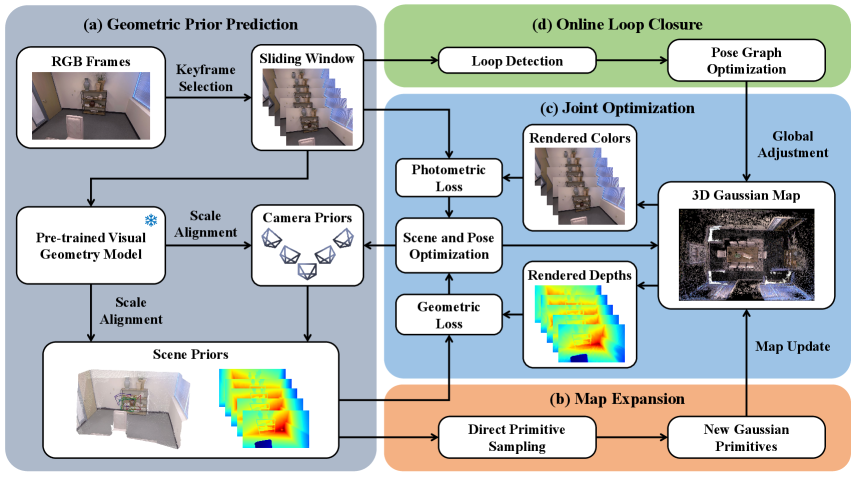
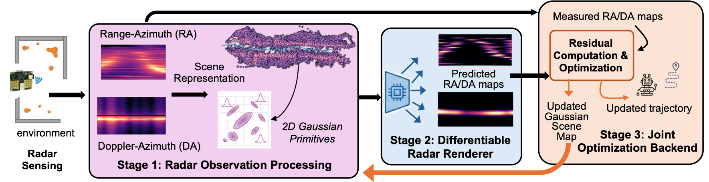
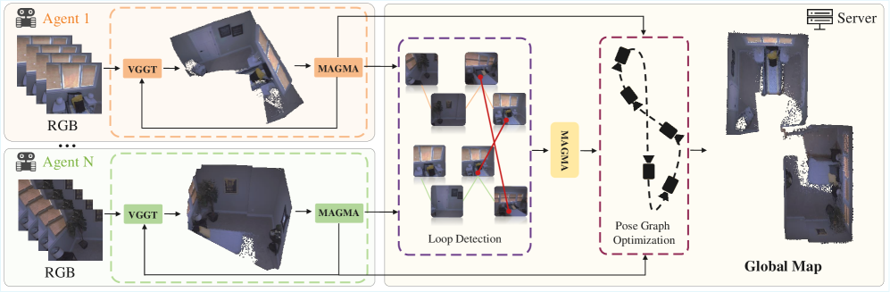
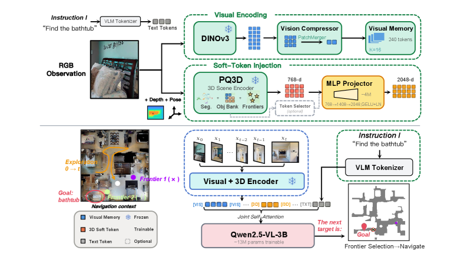

Executive Summary
本期最值得工程跟进的是“几何先验进入在线地图优化”。GeoGS-SLAM 把 VGGT 类 feed-forward 几何先验接进 3DGS SLAM 的 map expansion、pose/map joint optimization 与在线 loop closure；i3dgs 则从相反方向出发，把 VPR、covisibility graph、local BA、loop closure 与 Gaussian relocation 接入 unordered 3DGS capture。二者共同信号是：3DGS 不再只是后处理渲染层，而在更接近 SLAM/SfM 的前后端闭环里承担状态表示。
非视觉与多机器人方向在从“感知可用”转向“通信/信号域可优化”。DiffRadar 直接在 RA/DA 雷达测量空间做 differentiable rendering 和 joint pose-map optimization，报告 Radarize translational ATE 从 0.606m 降到 0.103m，并以 70 FPS 运行；CERPE 不训练新模型，而是用 SALAD descriptor gate、VGGT、Metric3Dv2 与 SE(3) propagation 来减少原始图像交换，在小团队相对位姿中维持 100% 成功率。它们的共同点是把传统“模块输出”改成可被约束和调度的中间状态。
FeedForward 3D 正在扩展到多 agent 与 embodied navigation，但证据边界要分清。MAGiSt3R 已经在 multi-agent monocular RGB 视频上给出接近 10 FPS 的重建/跟踪结果，SoftNav 显示把 3D scene token 直接注入 VLM 比文本序列化更有效；但 MAGiSt3R 公开仓库目前主要是项目页，SoftNav/CERPE 未发现公开代码，本期不能把论文结果写成本地可复现实绩。
Deep-read Papers
| 论文 | 系统/框架图 | 解决的问题 | 方法 / 结构 | Insight 与数学知识 | 实验与效果 | 复现与启发 | 阅读证据 |
|---|---|---|---|---|---|---|---|
| GeoGS-SLAM: Online Monocular Reconstruction Using Gaussian Splatting with Geometric Priors Monocular SLAM3DGSVGGT prior |
 Fig.2 GeoGS-SLAM overview |
现有 3DGS-SLAM 往往需要深度传感器或已知相机参数；纯 feed-forward 几何先验能实时给 point map / pose，但如果优化阶段丢掉原始 RGB，渲染质量与地图一致性会受限。论文目标是用未标定 RGB 输入同时做在线跟踪、dense reconstruction 和 photorealistic mapping。 | 系统分四段：keyframe selection 后调用预训练 visual geometry model 预测 camera priors 与 scene priors；map expansion 从 RGB 与几何先验直接采样 Gaussian primitives；coarse-to-fine joint optimization 同时最小化 photometric loss 和 depth/geometric loss；在线 loop closure 用 descriptor 检索历史窗口，再做 pose graph optimization 和全局 map adjustment。 | 关键数学点是把 3DGS rasterization 的 photometric residual 和 feed-forward depth/scene prior 的 geometric residual 统一进同一个窗口优化。scale alignment 用相邻帧 3D point map 的范数比估计尺度；primitive sampling 由 Difference-of-Gaussian 显著性和几何尺度控制，避免把 Gaussian 均匀撒在低信息区。 | Replica/TUM RGB-D/Waymo 上，GeoGS-SLAM 报告 PSNR 为 37.56/24.02/28.91，优于 Splat-SLAM 的 31.86/20.87/25.10；ATE 为 0.024/0.035/0.861m。单 keyframe 平均处理 582.1ms，其中 joint optimization 占 480.6ms。消融中去掉 camera priors 后 Replica ATE 从 0.024m 退化到 0.922m。 | 开源仓库可见，但运行依赖 PyTorch 2.7.1/CUDA、VGGT、diff-gaussian-rasterization 等；本期未 clone/编译。工程启发是：把 foundation geometry 当作可优化先验比“先预测再显示”更适合 SLAM，尤其是 loop closure 后还要移动 Gaussian map。 | arXiv HTML 全文深读：Intro、Related Work、Geometric Prior Prediction、Map Expansion、Joint Optimization、Online Loop Closure、Experiments、Ablation；系统图已下载并视觉确认；GitHub README/tree/entry/config 检查。 |
| DiffRadar: Differentiable Physics-Aware Radar SLAM with Gaussian Fields Radar SLAMGaussian fieldDifferentiable rendering |
 Fig.2 DiffRadar pipeline |
mmWave radar 适合低光、烟雾、隐私敏感场景，但传统 radar SLAM 通常在离散 RA/DA heatmap 上做 scan matching，几何连续性和雷达物理属性被切断，在长 corridor、动态干扰、motion transition 下容易累计漂移。 | DiffRadar 把场景表示为 physics-aware anisotropic Gaussian primitives；forward model 将 Gaussian scene 渲染到 range-azimuth 与 Doppler-azimuth 测量空间；后端用 rendered 与 observed RA/DA residual 联合优化轨迹和 Gaussian scene map。论文还构造 RDST stress-test 覆盖 corridor degeneracy、speed transition、dynamic clutter 和长 loop closure。 | 核心 insight 是“直接在雷达信号域闭环”：不是先把雷达离散成地图再匹配，而是保留散射体方向性、Doppler 响应和 Gaussian anisotropy，让 pose 和 map 互相解释。数学上更接近 differentiable sensor model + fixed-lag optimization。 | Radarize benchmark 上，translational ATE 从 Radarize 的 0.606m 降到 0.103m，约 6x；RDST zig-zag cart ATE 从 0.830m 到 0.039m，handheld 从 0.536m 到 0.085m；动态行人从 0 到 4 个时 ATE 仅从 0.085m 到 0.103m，map consistency 约 94%，Radarize 为 40-47%。稳态运行 70 FPS，map 40MB，Radarize 为 55 FPS/162MB。 | 本期未找到公开代码仓库。若后续复现，应先确认雷达硬件、RA/DA preprocessing 与 RDST 数据是否可获得；工程上适合用来启发“信号域 residual + map primitive”设计，而不是直接替代 LiDAR/VIO。 | arXiv HTML 全文深读：Abstract、Introduction、Radar Gaussian primitive、Differentiable renderer、Joint optimization、Radarize benchmark、RDST stress tests、runtime/ablation；系统图已下载并视觉确认。 |
| MAGiSt3R: Multi-Agent Feed-forward 3D Reconstruction from Monocular RGB Videos FeedForward 3DMulti-agentPoint map merging |
 Fig.2 MAGiSt3R overview |
3R/VGGT 类模型可以从 RGB 视频直接预测局部 point map 和相机，但多 agent 场景需要把各 agent 的局部地图放到统一坐标；传统 multi-agent NeRF/3DGS 依赖 per-scene optimization，速度难满足在线需求。 | 每个 agent 用 VGGT 类 feed-forward backbone 预测 local point map 和 pose；MAGMA merge model 在 intra-agent 和 inter-agent 层面把 local submap 合并进 global point map；server 检测 agent 间 loop 后再用 MAGMA 融合，最后用 pose graph optimization 减少累计漂移。 | 关键数学/结构是把几何 token、visual token、spatial token、camera token 聚合到 merge transformer：MAGMA 不是 ICP/RANSAC 的后处理，而是学习 local-to-global map registration。PGO 仍是必要补偿，因为 feed-forward 链路会累计 pose drift。 | ReplicaMultiagent 上，MAGiSt3R multi-agent 平均 reconstruction Acc./Comp. 为 5.37/3.36，RMSE 3.87；去掉 PGO 后 RMSE 退到 5.65。multi-agent tracking 平均 RMSE 3.87/3.88，低于 VGGT-SLAM 7.15 和 MA-MASt3R-SLAM 可比均值 4.43。AriaMultiagent multi-agent 平均 RMSE 3.52；runtime 为 9 FPS。 | 公开 GitHub 只发现 magist3r_page，主要是项目网页、图像和视频资源，不是可运行代码。启发是：多 agent F3R 的短板不是单帧几何预测，而是跨 agent 坐标融合、loop detection 与 drift 管理。 | arXiv HTML 全文深读：Intro、MAGMA architecture、loss、pose graph optimization、ReplicaMultiagent/AriaMultiagent experiments、runtime、limitations；系统图已下载并视觉确认；项目页 repo 仅 README/tree 级检查。 |
| SoftNav: Injecting 3D Scene Tokens into VLMs for Embodied Navigation Embodied navigation3D scene tokensVLM |
 Fig.2 SoftNav overview |
目标导向导航要求同时理解 3D scene 和语言目标。把 object/frontier 信息序列化成文本会损失连续空间表示，VLM 可能知道“是什么”，但不知道“在哪里、怎么走”。 | SoftNav 冻结 3D encoder 与 VLM，仅训练约 17M 参数的 projector/adapters。PQ3D 从 streaming RGB-D 中抽 object/frontier query embeddings，projector 将 768-d 3D token 映射到 VLM hidden space，VLM 同时看 visual memory、3D soft tokens 与文本指令，输出 frontier waypoint。 | 核心 insight 是 embedding-level transfer 优于 text serialization。数学上不是新 SLAM 后端，而是 interface 设计：把连续 3D scene state 保留为 soft token，让 VLM 在 self-attention 里处理空间语义，而不是先离散成坐标文本。 | HM3D-OVON 三个 split 的 SR 为 74.2%/68.3%/66.7%，SPL 为 33.9%/28.6%/25.7%，相对 prior best 的 SR 增益为 +19.2/+23.3/+25.9 pp。zero-shot 到 GOAT-Bench 的 SR 为 67.2%/64.2%，SG3D 为 47.2% s-SR 和 16.6% t-SR。软 token 对 Text-Hint 的 val_seen SPL 从 24.7% 提到 33.9%，p<0.0001。 | 本期未找到代码仓库；真实部署示例使用 Unitree Go2，但无法验证。对工程的启发是：把 3D map/frontier 表示接入 VLM 时，先考虑 token interface 和 spatial embedding，再考虑把地图转成冗长文本。 | arXiv HTML 全文深读：Intro、representation gap、Soft-token injection、inference pipeline、HM3D-OVON/GOAT/SG3D/real-world experiments、ablation、conclusion；系统图已下载并视觉确认。 |
| CERPE: Communication-Efficient Relative Pose Estimation with Vision Foundation Models for Ephemeral Collaborative Perception Relative poseMulti-robotVFM orchestration |
 Fig.2 CERPE method overview Fig.2 CERPE method overview |
多机器人/车路协同短时相遇时，不一定有 GPS、全局地图或持续视野重叠；直接共享 raw images 或高维视觉特征会消耗通信带宽，而传统 feature matching 在低重叠/大视角变化下失败。 | 每个 robot 连续广播本地 pose 和固定大小 descriptor；descriptor similarity 只负责 gating 原始观测请求。ego-motion 由 VGGT + bounded keyframe memory 估计，Metric3Dv2 校准 monocular scale；重叠时做 cross-robot VGGT 直接相对位姿估计，不重叠时从最近 direct anchor 用两侧 SE(3) ego-motion 传播。 | 关键 insight 是把“是否值得通信”和“怎样估位姿”解耦：descriptor 是低带宽触发器，不直接当 pose 证据；direct relative pose 是稀疏 anchor，ego-motion propagation 桥接 non-overlap intervals。数学对象主要是 SE(3) chain composition 和 quaternion geodesic rotation error。 | CAD simulation 中 CERPE 100% 成功率，rotation 0.089rad，但 full EM 的 translation 8.66m 不如 w/o EM 的 5.03m，作者解释为高重叠时 propagation 会引入 drift。Real-world CAD 中 CERPE predicted-scale translation 8.26m，GT-scale 2.94m，rotation 0.063rad，100% 成功率。physical robot team 中 CERPE rotation 0.086rad，100% 成功率；2/3 robot 运行分别 438ms/780ms，descriptor message 16.9KB，触发 image exchange 平均 26KB。 | 本期未发现代码。工程启发是：短时协同感知不应假设每帧重建全局图，先做通信策略与 direct-anchor/propagation 的边界管理。局限也明确：scale quality、shared-compute prototype、小团队、无后端 factor graph refinement。 | arXiv HTML 全文深读：Intro、problem formulation、method、CAD simulation、real-world CAD、physical robot experiments、runtime、limitations/conclusion；系统图已下载并视觉确认。 |
| Immediate 3D Gaussian Splat Reconstruction of Unordered Input with Global Consistency SfM/3DGSUnordered inputLoop closure |
Fig.1 unordered capture overview | 3DGS capture 常见输入是用户无序拍摄的图片，离线 SfM 能处理但要等全部数据且计算重；增量/SLAM 风格方法能即时反馈，但通常假设 sequential input，遇到 out-of-order shots 和 loop closure 时难保持全局一致。 | 方法由 two-level matching、covisibility graph、local BA、cluster-based loop closure 和 progressive Gaussian hierarchy 组成。VPR 先快速筛候选，再用 LightGlue/RANSAC 做几何验证；loop closure 通过 distinct cluster detection 和 welding window BA 触发，再把 Sim(3) correction 沿 graph backbone 传播到 poses 与 Gaussians。 | 关键数学是把 SfM/SLAM 的 graph connectivity 用于 3DGS capture：不是按时间找前序帧，而是按 covisibility 选择 well-connected keyframes；Gaussian relocation 用 Sim(3) 插值传播 loop closure 校正，hierarchy 控制可训练 Gaussian 和显存。 | 小/中场景 TUM/MipNeRF360/StaticHikes 中，作者方法在 MipNeRF360 达 26.29 PSNR、0.839 SSIM、0.241 LPIPS，用时 1:17；GLOMAP+T3DGS 达 27.52 PSNR 但用时 8:50。Large CityWalk 中作者为 22.03 PSNR、0.772 SSIM、0.336 LPIPS、29:38，Octree-GS 为 17.33/0.638/0.520、3:11:40。BA 10 iterations 为 15.9ms，g2o 为 461.4ms，CudaBA 为 78.1ms。 | 官方 repo graphdeco-inria/i3dgs 已公开，含 pose、scene、hierarchy、viewer、rasterizer 子模块；本期未 clone/运行。局限：pure rotation 无法 triangulate，动态元素未处理；作者也承认相比更慢的 global BA，部分前景 pose/quality 可能较低。 | arXiv HTML 全文深读：Intro、matching、BA、loop closure、hierarchy、main/appendix experiments、ablation、limitations；Fig.8 pipeline PNG 在 arXiv 下载后不可读，改用 Fig.1 总览图并视觉确认；GitHub README/tree/core files 检查。 |
{kind=link}
{kind=link}
{kind=link}
{kind=link}
{kind=link}
Repo Deep Dives
| Repo | 目标与能力 | 代码结构证据 | 依赖 / 硬件 | 成熟度判断 | 领域关系 |
|---|---|---|---|---|---|
| rlgao/GeoGS_SLAM_code stars 6 / forks 1；created 2026-04-02；pushed 2026-04-18；GitHub search updated 2026-07-14 |
GeoGS-SLAM 论文配套仓库，目标是 uncalibrated monocular RGB 输入下的在线 3DGS SLAM 和 on-the-fly NVS。 | README 给 conda 环境和 Replica/TUM/Waymo 命令；run.py 调用 vggt_slam.solver、VGGT、SceneModel、viewer；目录含 config/replica、config/tum、config/waymo、dataloaders/、scene/、eval/、scripts/download_datasets.py、submodules/diff-gaussian-rasterization。 |
README 指定 Python 3.12、PyTorch 2.7.1/cu118、cupy-cuda11x；仓库含 CUDA rasterizer 子模块，明显需要 NVIDIA GPU/CUDA。 | 代码结构较完整，有配置和 eval scripts；但 commit 集中在 2026-04，未本地运行，不确认论文所有表格是否可复现。 | 直接对应本期 GeoGS-SLAM 深读，是“feed-forward geometry prior + 3DGS SLAM”路线的可检查实现。 |
| graphdeco-inria/i3dgs stars 38 / forks 5；created 2026-07-05；pushed 2026-07-13；license NOASSERTION |
Immediate 3DGS 论文官方实现，目标是 unordered images 下即时 pose-free 3DGS reconstruction 和 global consistency。 | README 涵盖 setup、data guidelines、optimization、evaluation、viewers；tree 含 args.py、dataloaders/、poses/feature_detector.py、poses/lighterglue_matcher.py、poses/mini_ba.py、scene/hierarchy.py、scene/scene_model_loop_closure.py、scene/vpr_model.py、gaussianviewer.py 和 rasterizer 子模块。 |
Python + CUDA rasterizer；README 指向 project/paper，代码中使用 Depth Anything 3、LightGlue 风格匹配、BA CUDA kernels。 | 官方初始代码已公开且结构完整；只有一个 initial commit，未本地编译/运行，许可为非商业研究评估边界需检查。 | 连接 SfM/SLAM 与 3DGS capture，重点不是机器人导航，而是 unordered capture 的即时反馈和 loop closure 后 Gaussian relocation。 |
| NVIDIA/instant-nurec stars 46 / forks 5；created 2026-05-22；pushed 2026-07-17；Apache-2.0 |
Instant NuRec 官方仓库，目标是从 AV driving log 一次前向生成 3D Gaussian scene，可导出 PLY 并接入 NuRec/AlpaSim。 | README 明确“ncorev4 ingest → frame batch prep → forward pass → 3D-Gaussian PLY export”；tree 含 instant_nurec/model/、datasets/、predict/export_ply.py、predict/primitive_merge.py、utils/gaussians/、run_inference.py。cli.py 提供 --ncore-path、--output-dir、--merge、--n-gaussians、--camera-id 等参数。 |
需要 NVIDIA 生态、NCore 数据、HuggingFace 模型/数据；README 提到默认 2,000,000 Gaussians merge 目标。未下载模型或数据。 | 比论文页更像可运行工程包，近期 commit 包括“replace traced artifact with public source”。但未执行，不能确认权重、数据许可和推理环境。 | Feed-forward 3DGS driving simulation 路线，与 SLAM 关系是用短时多相机 log 快速生成可仿真 3DGS 世界，适合关注 autonomous driving world model / sim pipeline。 |
| sarthakchittawar/pixelloop stars 0 / forks 0；created 2026-07-10；pushed 2026-07-18 |
PixelLoop 的公开仓库占位，论文主题是 pixel-level loop closures for shortcut topological navigation。 | 当前 tree 只有 README.md；README 写明 IROS 2026 accepted，并声明 code release planned for Aug 2026。 |
未看到环境、依赖、运行脚本或数据说明。 | 只能算 README/元数据级 repo 跟踪，不是代码深读。列入是因为仓库在覆盖期内更新且方向直接相关。 | 补足本期 embodied/topological navigation：从 metric pose graph loop closure 转向 pixel topology shortcut，用于 any-point-to-any-point navigation。 |
raw.githubusercontent.com 连接失败，关键文件改用 GitHub Contents API；没有 clone、没有编译、没有运行 demo；未登录 GitHub/HuggingFace，因此 stars/forks 与文件树是公开 API 快照。Quantitative Experiment Highlights
| 来源 | 数据集 / 场景 | 指标 | 结果 | 解释边界 |
|---|---|---|---|---|
| GeoGS-SLAM | Replica、TUM RGB-D、Waymo | PSNR/SSIM/LPIPS、ATE、per-keyframe runtime | PSNR 37.56/24.02/28.91；ATE 0.024/0.035/0.861m；单 keyframe 582.1ms，joint optimization 480.6ms。 | 作者表格结果；未本地运行。camera prior 消融显示 ATE 从 0.024m 退到 0.922m，说明几何先验是核心依赖。 |
| DiffRadar | Radarize benchmark + RDST stress tests | ATE、map consistency、FPS、map memory | Radarize translational ATE 0.606m → 0.103m；RDST map consistency 43% → 95%；70 FPS，map 40MB。 | 雷达-only 特定硬件/预处理设置；短期 relative translation error 并非每项都优于 Radarize，主要优势在长期 drift 和 map consistency。 |
| MAGiSt3R | ReplicaMultiagent、AriaMultiagent | Acc./Comp./RMSE、FPS | ReplicaMultiagent multi-agent RMSE 3.87/3.88；AriaMultiagent multi-agent Avg. 3.52；runtime 9 FPS。 | 公开代码尚非算法实现，仅项目页；论文结果不能视作本地可复现。 |
| SoftNav | HM3D-OVON、GOAT-Bench、SG3D | SR、SPL、bootstrap significance | HM3D-OVON SR 74.2/68.3/66.7%，SPL 33.9/28.6/25.7%；GOAT SR 67.2/64.2%；SG3D s-SR 47.2%、t-SR 16.6%。Soft token 对 Text-Hint 的 val_seen SPL +9.2pp，p<0.0001。 | 导航策略训练于 OVON，zero-shot 结果仍依赖 PQ3D benchmark-specific stage-2 weights；未验证真实机器人部署。 |
| CERPE | CAD simulation、real-world CAD、Agilex Limo indoor robots | position/rotation error、success、runtime、message size | 三类场景均 100% success；real-world CAD rotation 0.063rad，predicted-scale translation 8.26m，GT-scale 2.94m；physical robots rotation 0.086rad；2/3 robots 推理 438/780ms。 | translation 并非所有场景最优；EM propagation 在高重叠场景可能引入 drift，作者明确把它定位为 non-overlap continuity 机制。 |
| Immediate 3DGS | TUM、MipNeRF360、StaticHikes、SmallCity、Wayve、CityWalk | PSNR/SSIM/LPIPS、time、BA runtime、GPU memory | MipNeRF360 26.29 PSNR/1:17；CityWalk 22.03 PSNR/29:38，Octree-GS 为 17.33/3:11:40；BA 15.9ms vs CudaBA 78.1ms；CityWalk hierarchy 3.7M Gaussians/12.8GB，without hierarchy OOM >24GB。 | GLOMAP+T3DGS 在部分数据集质量更高但离线更慢；该论文目标是即时反馈，不是绝对最高质量。 |
Supplemental Tracking Papers
| 论文 | 方向关系 | 解决的问题 | 方法 / 结构 | Insight 与数学知识 | 实验 | 证据级别与后续动作 |
|---|---|---|---|---|---|---|
| SalientGS | SfM-to-3DGS / unordered reconstruction | 昂贵 SfM preprocessing 和 frozen pose interface 限制 3DGS 重建。 | importance-guided MCMC Gaussian allocation，把 multi-view residual 聚合为 underfit/redundancy 信号，指导 birth/relocation。 | 把 Gaussian capacity allocation 写成 smooth importance-weighted sampling，而非硬阈值 densification。 | 摘要称 end-to-end reconstruction 15 分钟，并提供 supplementary failure cases。 | 摘要级，未深读全文；后续读代码 Six-Bit-TX/SalientGS 和 failure cases。 |
| Instant NuRec | Feed-forward 3DGS / driving simulation | 自动驾驶 neural simulation 需要快速从驾驶日志生成可仿真 3DGS 世界。 | 多相机短窗口输入，预测 static/dynamic 3DGS layers、sky cubemap、ISP corrections，并支持 non-pinhole camera via 3DGUT。 | 将 reconstruction 从 per-scene optimization 转成 calibrated rig 上的一次前向生成。 | 摘要称 10-20s 多相机场景约 1.5s 重建，Waymo PSNR 比最强 baseline 高 2.01dB。 | 摘要级 + repo README/tree 级；后续需下载 HF 模型/NCore 数据验证 CLI。 |
| COLMAR | Multi-agent active 3D reconstruction | 多 agent 主动重建中视角冗余、聚集和碰撞会降低几何覆盖。 | shared policy optimization over map-centric observations，PPO 训练，部署时独立选 viewpoint，再用 3DGS 做 photometric evaluation。 | 把 exploration reward 和 downstream reconstruction quality 对齐，而不是只最大化可见面积。 | 摘要称 GLEAM/Replica 上最高 +54% reconstruction accuracy、+49% coverage。 | 摘要级，未深读全文；后续看是否有 multi-agent planner/env 代码。 |
| Information-Aware Odometry and Retroactive Loop Closure | Graph-based LiDAR SLAM | 低 trajectory error 不保证 revisit map consistency，missed loop closures 会留下局部错位。 | 估计 geometry-dependent ICP information matrices；hierarchical loop closure 解耦 place recognition 和 registration；retroactive loop closure 从优化后的 pose graph 找回漏闭环。 | 把 map consistency 作为独立评估协议，而非只看 ATE。 | 摘要称多数据集 trajectory accuracy 持平或更好，并改善 revisit local map consistency。 | 摘要级，未深读全文；后续优先检查 map consistency metric 和开源实现。 |
| Desc++ | Visual SLAM data association | 手工 descriptor 在光照/视角变化下降级，学习前端替换成本高。 | 轻量 descriptor enhancement，联合 keypoint geometry 与 order-agnostic global attention / geometry-aware sequential modeling。 | 保持原 descriptor 维度和匹配接口，便于接入已有 V-SLAM。 | 摘要称在 descriptor matching、correspondence 和四个 V-SLAM system-level benchmark 上改善稳定性。 | 摘要级，未深读全文；后续看对 ORB-SLAM 类 pipeline 的具体延迟。 |
| PixelLoop | Topological navigation / loop closure | 纯拓扑地图中的 loop closure 不应只对齐 metric pose，还会改变 navigation connectivity。 | 在 pixel-level relative 3D geometry topology 中加入 dense topological shortcuts，用于 any-point-to-any-point navigation。 | loop closure 的作用从坐标校正转为 cost propagation 和 shortcut planning。 | 摘要称 simulated experiments 中 SR 和 SPL 绝对提升超过 35pp，并有 real-world mobile robot validation。 | 摘要级 + README 元数据级；仓库写明 2026-08 计划开源代码。 |
| ABot-3DWorld 0 | 3D world model / 3DGS world generation | 从 text/image/video 到可探索 3D world 的低门槛生成。 | Spatial Generative Primitive：panorama + point cloud；再生成 3D-consistent panoramic video 并重建成 3DGS world。 | 把 world model 输出约束为可进入 reconstruction engine 的空间 primitive。 | 摘要称 rich multimodal inputs 下强于 Marble，并可锚定地理 POI。 | 摘要级，未深读全文；后续检查 open-source model 和 geographic anchoring 证据。 |
| Xiaomi-Robotics-U0 | Embodied synthesis / world foundation model | 通用图像/视频生成模型缺少 embodied multi-view consistency 与 robot constraints。 | 38B multimodal autoregressive model，统一 text-to-image、editing、embodied scene/video generation 和 embodied transfer。 | 把 embodied generation 视作 foundation world model 的受控扩展，而非单独训练小 robot model。 | 摘要称 pi_0.5 OOD success 36.9% → 63.2%，并在 World Arena 排第一。 | 摘要级，未深读全文；后续需看 robotics.xiaomi.com 页面、checkpoint 和评测协议。 |
| FlowWAM | World Action Model / embodied control | 数值 action 与 video generator 表示不对齐，视觉 action 表示又缺少时序 motion structure。 | 用 optical flow video 作为统一 action representation，双流 diffusion 同时支持 policy mode 和 world-model mode。 | flow 既是动作又是视频原生条件，可从无 action label 视频中预训练。 | 摘要称 RoboTwin success 92.94%/92.14%，WorldArena EWMScore 63.71。 | 摘要级，未深读全文；后续看 flow action 到真实机器人控制接口。 |
| GigaWorld-Policy-0.5 | WAM / robot policy latency | 显式未来视频生成让 WAM 难实时闭环。 | action-centered WAM，训练时利用 future dynamics，推理时 action-only；Mixture-of-Transformers 分离 visual dynamics 和 action generation。 | 未来视觉监督可训练，推理不必生成视频。 | 摘要称 RTX 4090 本地推理 85ms。 | 摘要级，未深读全文；后续看 AutoResearch 搜参是否可复现。 |
| M4World | Driving world model / multi-view LiDAR-video | 自动驾驶 world generation 缺少 object-level controllability 和 minute-long stability。 | 多视角多模态生成 surround-view videos 和同步 LiDAR scans，支持 object manipulation 与四步 denoising online causal generation。 | 将 object layout/appearance control 与长时 streaming 统一到 driving simulator 数据引擎。 | 摘要称 condition adherence、cross-view consistency 和长尾增强有效。 | 摘要级，未深读全文；后续看 VLM judge 是否可靠。 |
| AeroAct | Aerial WAM / language-conditioned flight | quadrotor VLA 常用离散动作或 waypoint，缺少未来观测约束下的动态可执行 action。 | action-centered WAM，把 pretrained video diffusion Transformer 改造成从 egocentric history/proprioception/language 到 trajectory-action chunks。 | 未来第一视角视频只作为训练 consequence supervision，部署直接解码 action。 | 摘要称 closed-loop simulation 与真实 quadrotor 上 target tracking/object search 提升。 | 摘要级，未深读全文；后续看 real-world flight safety 与 3DGS renderer 数据生成细节。 |
| SceneBind | Scene representation / 3D spatial grounding | omni-modal encoder 有语义但缺显式空间结构。 | global semantic embedding + object-centric semantic-spatial slots；SceneBind Matching 做 global scene similarity 与 object alignment。 | 把“what”和“where”绑定为 scene-level entity 表示。 | 摘要称 scene/spatial retrieval SOTA，支持 audio-visual localization zero-shot transfer。 | 摘要级，未深读全文；后续看数据集标注和 spatial uncertainty 表示。 |
| G2SR | Fast Gaussian surface reconstruction | few-view 3DGS 容易产生 floater，Transformer 端到端方法重且泛化有限。 | 轻量 neural frontend 检测/跟踪 2D Gaussian splats，analytic backend 用 multi-view geometry 三角化 metric-scale 3D splats。 | 把可解析几何问题从大模型回收给 analytic backend。 | 摘要称 ScanNet/Replica/DTU 上 69-89 reconstructions/s，203MB GPU memory。 | 摘要级，未深读全文；后续可与 mobile robot online surface reconstruction 对比。 |
| Compression of 3D Gaussian Splatting Data Using GPU-friendly Graphics Texture Coding | 3DGS deployment / compression | SH coefficients 让 3DGS primitive 内存大，现有压缩未充分利用 GPU texture decoder。 | 将 primitives 局部分组/重排序，用 BC1/BC7 texture compression 压 SH color coefficients，并保持 random access。 | 3DGS 压缩要对 GPU parallel decoding 友好，而不只是文件体积小。 | 摘要称视觉降质可忽略，并保持渲染性能。 | 摘要级，未深读全文；后续看 large-scene 3DGS streaming 是否可直接受益。 |
| Breaking Déjà Vu | Visual place recognition / SLAM loop closure auditing | VPR threshold 在环境变化下不可靠，false loop closure 会破坏 SLAM map。 | 用 VLM 对 query/candidate image 做 instance-level post-retrieval verification，不依赖 architecture-specific confidence。 | 把 VPR 结果从“相似度阈值”升级到独立视觉-语言审计。 | 摘要称 6 个 benchmark、5 个 VPR 方法、4 个 VLM；recall@1 平均 +13.6%，false acceptance 降至 12%，precision >95%。 | 摘要级，未深读全文；后续重点查延迟、false negative 和是否适合在线 loop closure。 |
Trends & Insights
1. 3DGS-SLAM 的核心正在从“地图长什么样”转为“地图怎样参与状态估计”
GeoGS-SLAM、DiffRadar、Immediate 3DGS 都把 Gaussian/field representation 放进 pose-map 闭环：GeoGS-SLAM 用几何先验约束 Gaussian map 和 camera poses；DiffRadar 把 radar Gaussian field 渲染回测量空间；i3dgs 在 loop closure 后迁移 Gaussians。这个趋势比单纯追求渲染 PSNR 更接近机器人系统需求。
2. Feed-forward 3D 正在补齐 long-horizon 和 multi-agent 短板
MAGiSt3R 用 MAGMA 处理 intra/inter-agent submap merge，SoftNav 处理 3D token 到 VLM 的 interface，Instant NuRec 用一次前向支撑 driving simulation。它们的共同挑战不是“是否能预测 3D”，而是如何把预测结果接进地图融合、导航决策、仿真闭环和可复现工程。
3. 通信与传感器物理约束成为新系统变量
CERPE 把 descriptor-only broadcast 和 event-triggered raw image exchange 分开；DiffRadar 把雷达 RA/DA 物理测量直接作为优化对象。对多机器人/低能见度应用，这比单纯换 backbone 更重要，因为瓶颈在带宽、尺度、重叠视野和传感器退化。
4. 热闹但证据不足的方向
本期 world model/WAM/VLA 论文很多，尤其是 RoboTTT、AeroAct、FlowWAM、GigaWorld、Xiaomi-U0、M4World。但除 SoftNav/CERPE 与 3D scene/relative pose 直接相关外，其余多为摘要级跟踪，尚未深读训练数据、评测协议、失败模式和代码可用性，不纳入本期核心工程判断。
Evidence & Reading Coverage
| 对象 | 实际阅读/检查范围 | 证据等级 | 不足 |
|---|---|---|---|
| GeoGS-SLAM、DiffRadar、MAGiSt3R、SoftNav、CERPE、Immediate 3DGS | arXiv HTML 全文：Intro/Related Work、Method、Experiments、Ablation/Analysis、Limitations/Conclusion；表格和关键实验段落抽取；overview/framework/pipeline 图下载并视觉确认。 | 全文深读级 | 未运行代码，未下载 PDF source、权重或数据集；部分数学符号在 HTML 中需结合上下文解释。 |
| Supplemental 16 篇 | arXiv API 元数据、标题、分类、提交时间、摘要；对 Instant NuRec / PixelLoop 补充 GitHub README/tree 元数据。 | 摘要级 / 元数据级，未深读全文 | 不能作为深度定量结论来源；可能漏掉正文限制、消融失败或代码不可用问题。 |
| GeoGS_SLAM_code、i3dgs、instant-nurec、pixelloop、magist3r_page | GitHub API repo metadata、README、目录树、近期 commit；关键文件通过 Contents API 读取，包括 GeoGS run.py/config/base.yaml、i3dgs args.py/scene_model_loop_closure.py、Instant NuRec run_inference.py/cli.py。 |
README/API 级 repo 深读 | 未 clone、未编译、未运行；GitHub raw 域名连接失败；SoftNav/CERPE/DiffRadar 未发现公开代码。 |
| 系统图资产 | 下载 6 张 arXiv HTML 系统/框架图；使用本地图像查看确认 GeoGS、DiffRadar、MAGiSt3R、SoftNav、CERPE、i3dgs Fig.1 可读。 | 视觉确认级 | i3dgs Fig.8 pipeline PNG 下载后不可读，未在报告中使用；未做裁剪增强。 |
值得跟进事项
- 优先本地尝试 i3dgs 或 GeoGS_SLAM_code 的小样本 demo：两者代码结构最完整，且都直接涉及 3DGS 与 SLAM/SfM 闭环。
- Instant NuRec 值得作为 driving simulation 方向跟进，但先确认 HuggingFace 模型、NCore 数据许可和单 GPU 显存需求；不应只看 1.5s 摘要数字。
- SoftNav 后续重点查代码是否开放和 PQ3D/3D encoder 可替换性；如果要接自己的地图系统，token interface 比 prompt 文本格式更关键。
- DiffRadar 若开源，应优先复核 RA/DA preprocessing、RDST stress-test 构造和 70 FPS 测试硬件；它的 signal-domain residual 思路可迁移到 sonar/radar-like mapping。
- Supplemental 中优先补读 PixelLoop、Desc++、COLMAR、SalientGS：分别覆盖 topological navigation、V-SLAM data association、多 agent active reconstruction、SfM-to-3DGS capacity allocation。
原始链接列表
- GeoGS-SLAM arXiv
- GeoGS-SLAM project
- GeoGS_SLAM_code GitHub
- DiffRadar arXiv
- MAGiSt3R arXiv
- MAGiSt3R project
- MAGiSt3R page GitHub
- SoftNav arXiv
- CERPE arXiv
- CERPE project
- Immediate 3DGS arXiv
- Immediate 3DGS project
- i3dgs GitHub
- SalientGS arXiv
- SalientGS GitHub
- Instant NuRec arXiv
- Instant NuRec GitHub
- Instant NuRec project
- COLMAR arXiv
- LiDAR map consistency arXiv
- Desc++ arXiv
- PixelLoop arXiv
- PixelLoop project
- PixelLoop GitHub
- ABot-3DWorld 0 arXiv
- Xiaomi-Robotics-U0 arXiv
- Xiaomi-Robotics-U0 project
- FlowWAM arXiv
- FlowWAM project
- GigaWorld-Policy-0.5 arXiv
- M4World arXiv
- AeroAct arXiv
- SceneBind arXiv
- G2SR arXiv
- 3DGS texture compression arXiv
- Breaking Déjà Vu arXiv
- arXiv API search endpoint used for candidate discovery
- GitHub REST API used for repo metadata/tree/contents